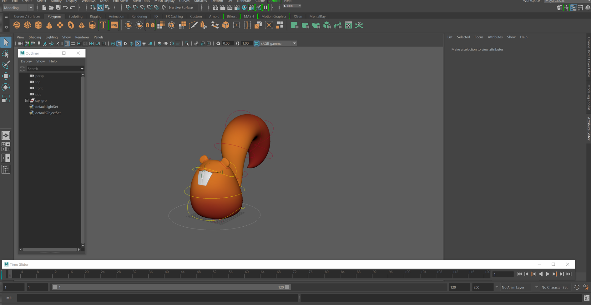
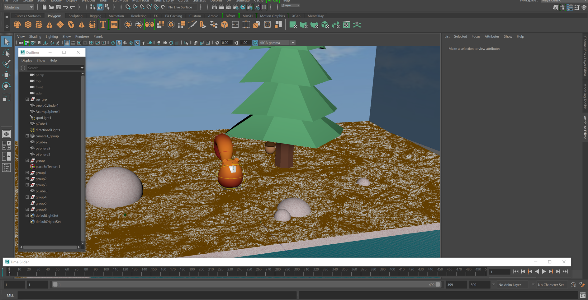

Animation Creation
This project involved using Maya to animate a bouncing squirrel using animation principles. I also had to create other objects in the scene and add textures.Animation Process
My peers and I started with a basic squirrel provided by Animation Mentor. In each weekly workshop we learnt how to navigate Maya and animate the squirrel. We were also shown how to model other objects and add textures. At the end of the six weeks we submitted a formative assessment. This involved animating the squirrel, making it interact with another object and adding textures.

